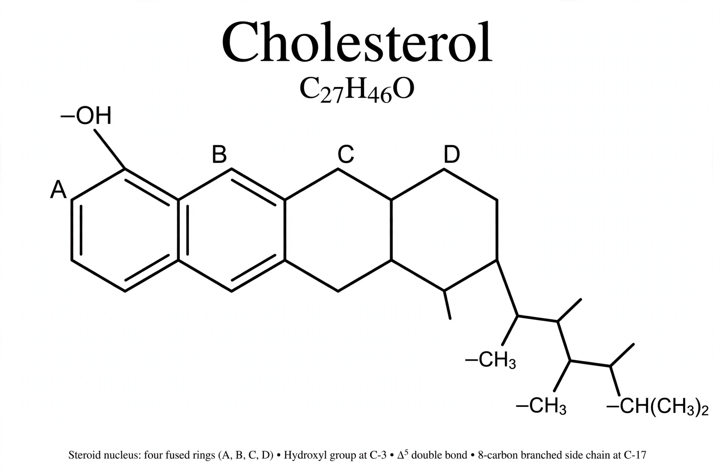

[Image placeholder: The chemical structure of cholesterol]**Cholesterol** is an organic molecule, a sterol (a modified steroid lipid), biosynthesised by all animal cells and an essential structural component of cell membranes, where it modulates fluidity. It is also the precursor of steroid hormones, bile acids and vitamin D. Animals obtain cholesterol from food and make it in the liver; it travels in the blood packaged in lipoproteins.
Popular discussion divides cholesterol into 'bad' LDL (low-density lipoprotein, which delivers cholesterol to tissues and drives atherosclerotic plaque) and 'good' HDL (high-density, which returns it to the liver). Persistently high LDL cholesterol is a major causal risk factor for cardiovascular disease, the world's leading killer; it is lowered by lifestyle change and by drugs, chiefly statins, plus ezetimibe and PCSK9 inhibitors. The name comes from Greek cholē (bile) and stereos (solid), as it was first isolated from gallstones in the eighteenth century.
Cells regulate cholesterol tightly: when it is abundant they stop making and importing it (the SREBP pathway, worked out by Brown and Goldstein, Nobel 1985). Familial hypercholesterolaemia — mutations in the LDL receptor — causes severe early heart disease and spurred that research. Blood cholesterol is measured in a lipid profile; desirable total cholesterol is usually quoted below 5 mmol/L (200 mg/dL), with treatment targets set by overall risk.